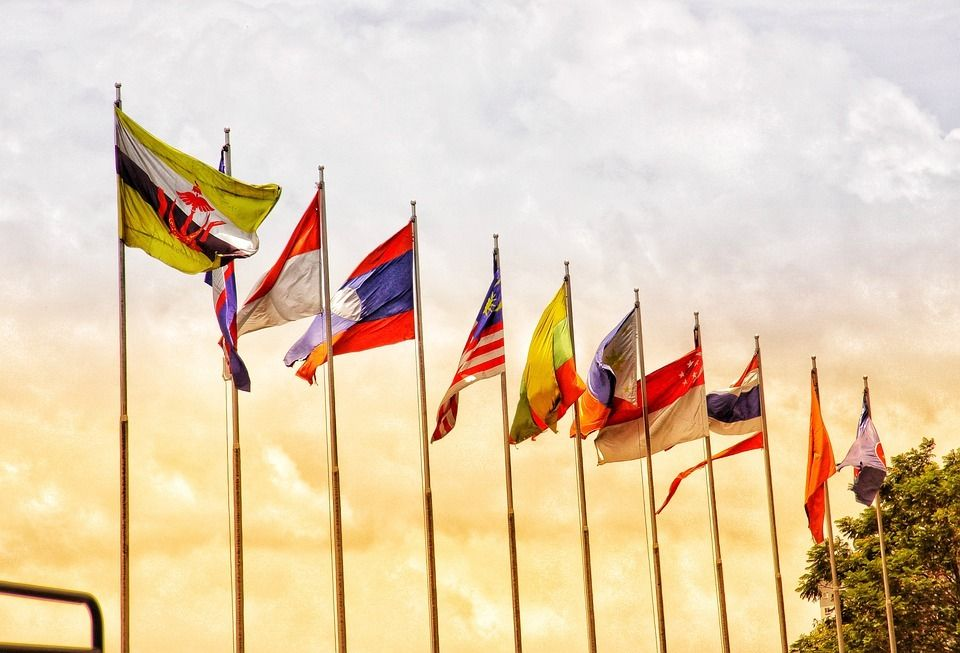
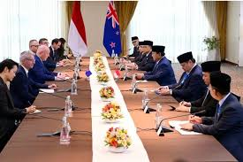

 
Halo Pak Agus, Ibu Yustin, Pak Robi, dan teman-teman. Terima kasih atas kesediaan waktu Bapak, Ibu, dan teman-teman telah membuka dan mengunjungi website saya pada hari ini. Perkenalkan, saya Aureen dari Kelas 95, nomor absen 7. Website saya ini berjudul, “Pengaruh SDGs dalam mendorong Kerjasama Internasional secara Bilateral, Regional, dan Multilateral.”
Melalui website ini, saya ingin menyampaikan dan menjelaskan bagaimana Sustainable Development Goals (SDGs) atau Tujuan Pembangunan Berkelanjutan dapat menjadi salah satu faktor utama yang mendorong terciptanya kerjasama antara Indonesia dengan negara-negara lain. Baik dalam kerjasama secara bilateral, regional, maupun multilateral, serta dalam berbagai bidang seperti ekonomi, pendidikan, lingkungan, dan kesehatan.
SDGs adalah agenda pembangunan global yang telah disepakati negara-negara yang berfungsi untuk mengatasi isu-isu dan tantangan global bersama. Kolaborasi ini tidak hanya untuk mencapai tujuan pembangunan berkelanjutan secara nasional namun juga secara global yang mendorong kesejahteraan serta memperkuat hubungan secara internasional.
Kerjasama Indonesia dengan negara-negara lain dapat memberikan manfaat yang luar biasa kepada SDGs, baik secara langsung maupun tidak langsung. Dapat menjalin hubungan yang erat antar negara secara diplomatik, meningkatkan pertukaran budaya, perdagangan, investasi, serta memperkuat perdamaian dan stabilitas di kawasan.
Semoga melalui website ini, kita dapat lebih memahami pentingnya peran SDGs dalam mendorong kesejahteraan global, serta bagaimana kerjasama antarnegara secara bilateral, regional, maupun multilateral dapat menwujudkan tujuan SDGs. Terima kasih atas perhatiannya, dan saya berharap website ini dapat memberikan wawasan yang luas serta dapat berguna dan bermanfaat bagi kita semua.
Selamat membaca!!